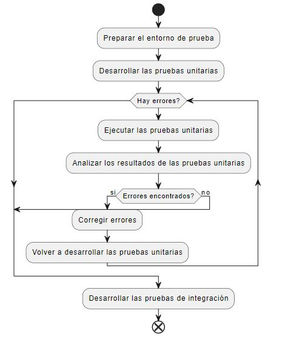
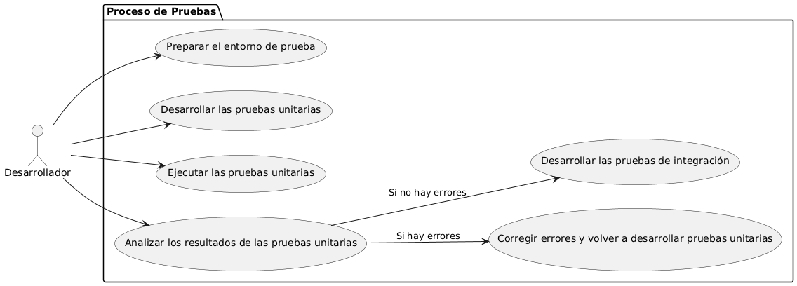

Epica de Análisis¶
Diagrama de Actividades¶
 Este diagrama de actividades ilustra el flujo de trabajo desde la preparación del entorno de prueba hasta el desarrollo de pruebas de integración. Comienza con la preparación del entorno, seguido por el desarrollo y la ejecución de pruebas unitarias. Luego, se analizan los resultados y, si hay errores, se corrigen y se repite el proceso. Si no hay errores, se continúa con pruebas de integración, finalizando el proceso.
¶
¶
Caso de uso historia TAL-4¶
El caso de uso TAL-4 se centra en la creación de un diagrama de canvas lean para el análisis de negocio de una aplicación. Incluye definir el problema sin mencionar la aplicación y proponer una solución sin incluir el software. Los criterios de aceptación requieren buena redacción, explicación clara del problema y argumentación coherente de la solución. Actualmente, está en desarrollo.
| ID TAL-4 | |
| Requerimiento: Crear el diagrama de canvas lean ID TAL-4 | |
| Historia de usuario | |
| Como Usuario, Administrador quiero crear el diagrama de canvas lean para definir el análisis de negocio de la app a desarrollar | |
| Estado de la tarea | En desarrollo |
|---|---|
| Caso de uso (Pasos) | |
|
|
| Criterios de aceptación | |
|
|
| Calidad | En desarrollo |
| Versionamiento | En desarrollo |
Diagrama de Caso de uso¶
 Este diagrama de actividades ilustra el flujo de trabajo desde la preparación del entorno de prueba hasta el desarrollo de pruebas de integración. Comienza con la preparación del entorno, seguido por el desarrollo y la ejecución de pruebas unitarias. Luego, se analizan los resultados y, si hay errores, se corrigen y se repite el proceso. Si no hay errores, se continúa con pruebas de integración, finalizando el proceso.